Top Destinations in North Central Province (Rajarata)
Discover the signature highlights and attractions across this province.
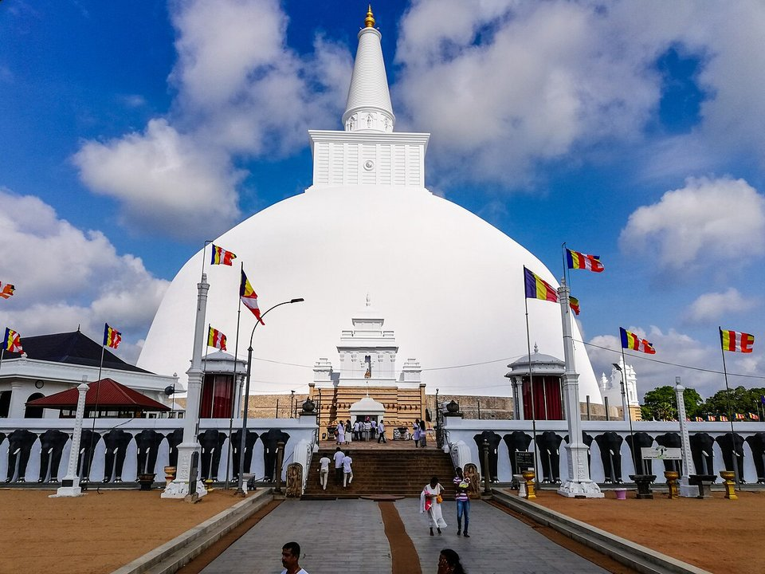
Ancient CitiesAnuradhapura Ancient Sacred City
The first capital of ancient Sri Lanka for over a millennium (377 BCE – 1017 CE), a UNESCO World Heritage expanse of colossal stupas, monastic universities, and royal reservoirs.
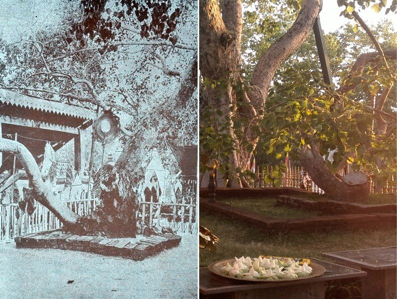
Temples & Religious SitesJaya Sri Maha Bodhi
The oldest living human-planted tree in the world with a documented planting date of 288 BCE, grown from a cutting of the sacred Bodhi tree in Bodh Gaya under which Buddha attained enlightenment.
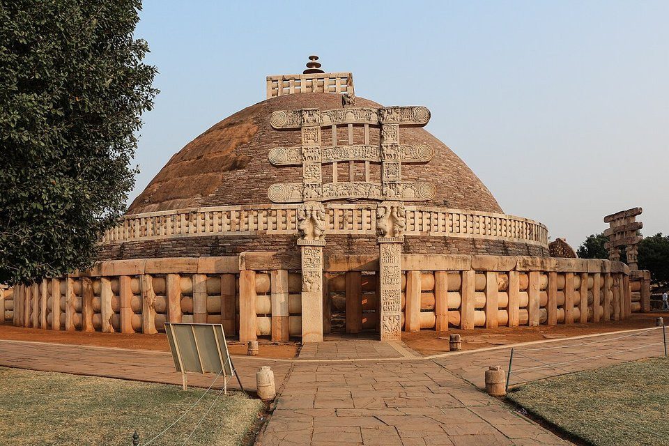
Ancient CitiesRuwanwelisaya Great White Stupa
The dazzling white stupa built by King Dutugemunu in 140 BCE, standing 103 meters tall and surrounded by a monumental wall of 344 life-sized carved elephants.
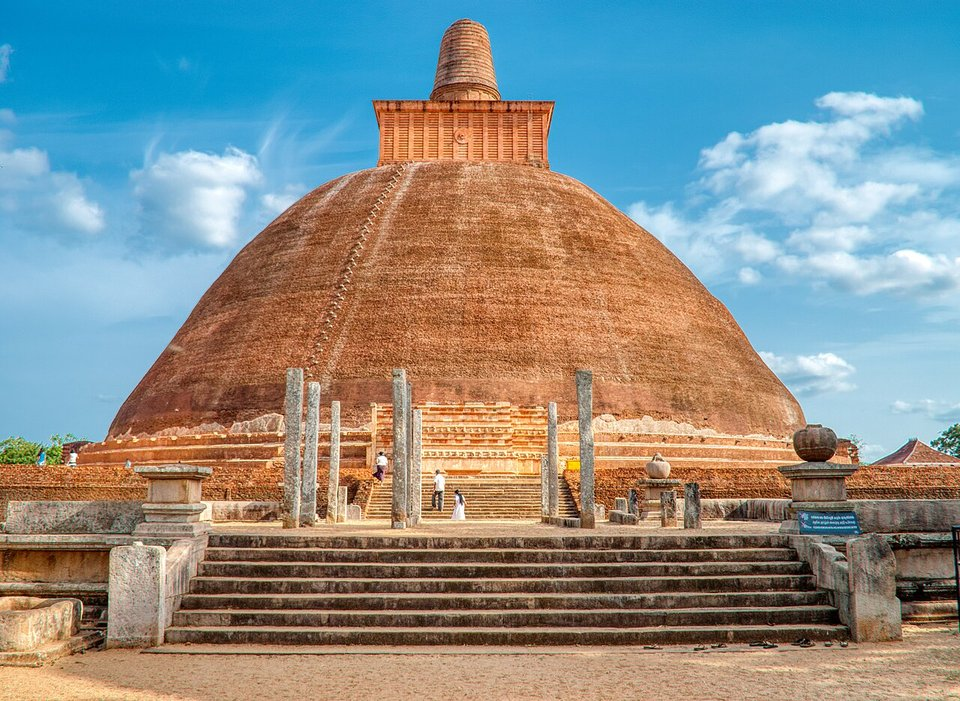
Ancient CitiesJetavanaramaya Stupa
The world's tallest ancient brick monument, a staggering 122-meter stupa containing over 93 million baked clay bricks, built by King Mahasena in the 3rd century CE.
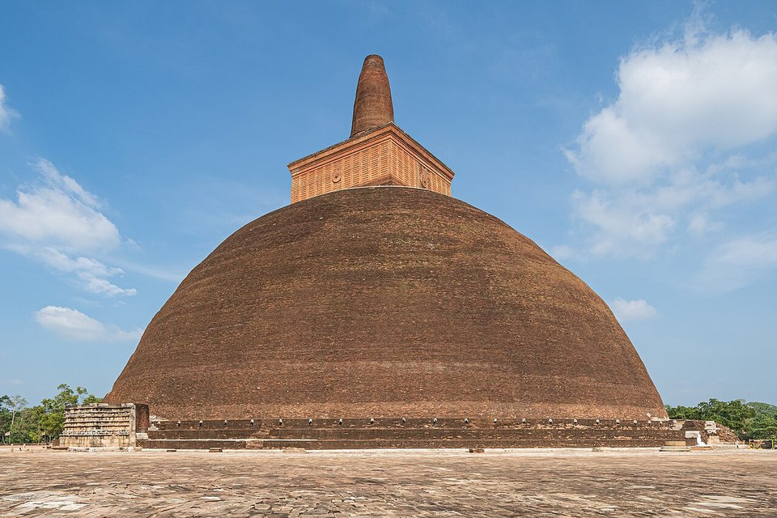
Ancient CitiesAbhayagiri Monastery Complex & Moonstone
The sprawling 200-hectare ancient monastic university that sheltered 5,000 international monks, famous for the Samadhi Buddha and Sri Lanka's finest carved moonstone.
 Ancient Cities
Ancient Cities
Isurumuniya Lovers Rock Temple
A charming 3rd-century BCE rock temple beside Tissa Wewa, famous for the world-renowned 'Isurumuniya Lovers' stone relief carving and royal elephant pool reliefs.
 Ancient Cities
Ancient Cities
Mihintale Sacred Mountain Peak
The cradle of Buddhism in Sri Lanka, an ancient sacred mountain where King Devanampiya Tissa met Arhant Mahinda in 247 BCE, reached via 1,840 stone steps.
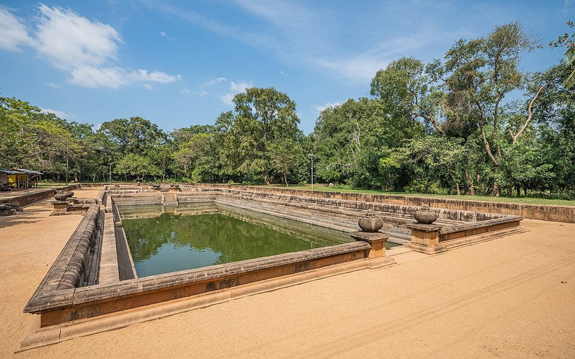
Ancient CitiesTwin Ponds (Kuttam Pokuna)
A masterwork of ancient Sinhalese hydraulic architecture, two exquisitely proportioned 8th-century stone bathing pools with underground water filtration systems.
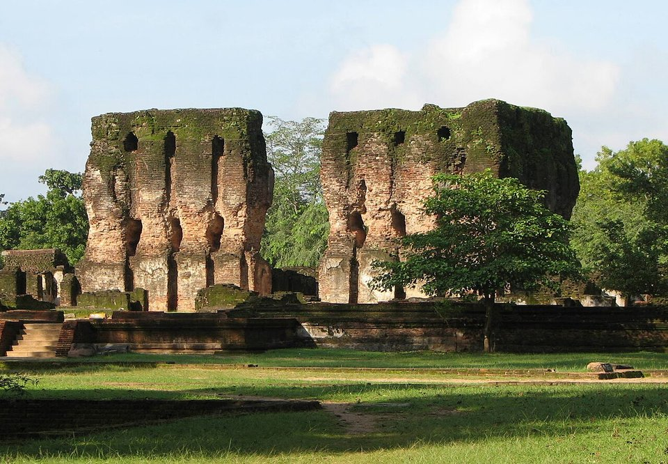
Ancient CitiesPolonnaruwa Ancient Royal City
The magnificent medieval capital of Sri Lanka (11th–13th century CE), a UNESCO World Heritage royal city of palaces, stone council chambers, and the Sacred Quadrangle.
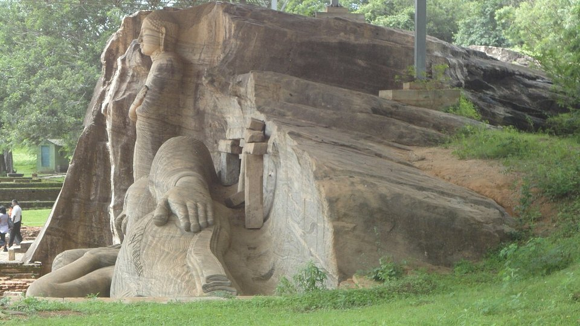
Ancient CitiesGal Vihara (Rock Temple)
The supreme masterpiece of ancient Sri Lankan stone carving: four colossal Buddha statues hewn directly from a single massive granite cliff face by King Parakramabahu I.
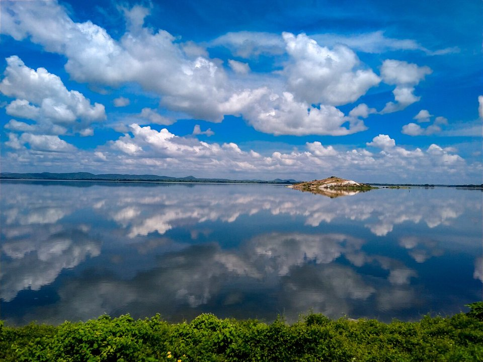
Lakes & ReservoirsParakrama Samudraya (Sea of Parakrama)
The colossal 2,500-hectare ancient inland reservoir engineered by King Parakramabahu the Great, fulfilling his decree that 'not a single drop of rain must flow to the sea unutilized'.
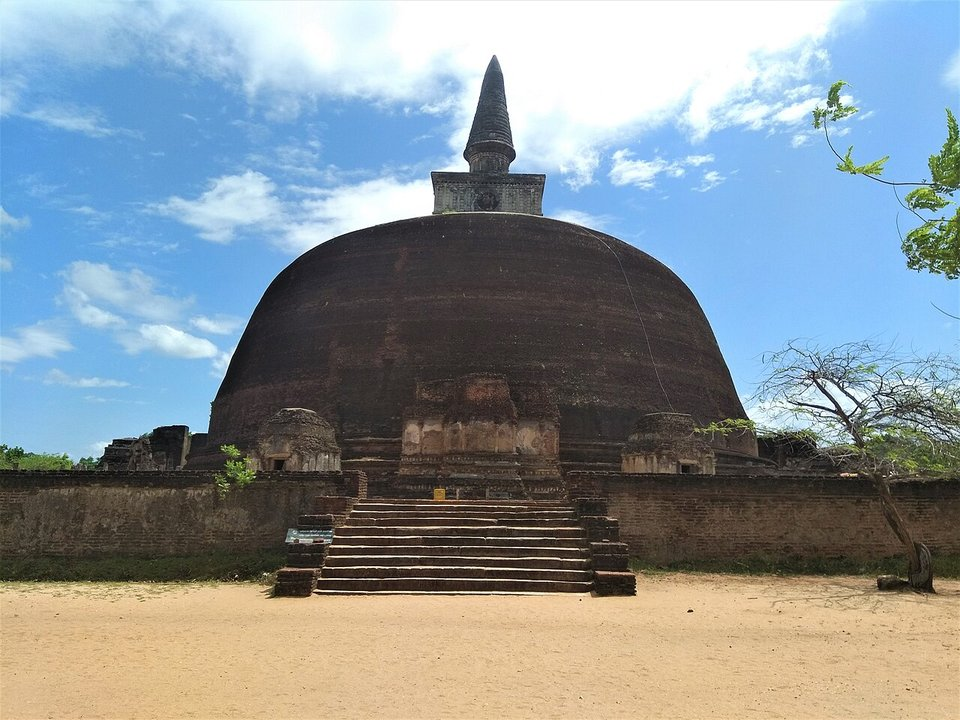
Ancient CitiesRankoth Vehera Golden Pinnacle Stupa
The largest stupa in Polonnaruwa, rising 55 meters with a circumference of 168 meters, built entirely of baked clay bricks by King Nissanka Malla in the 12th century.
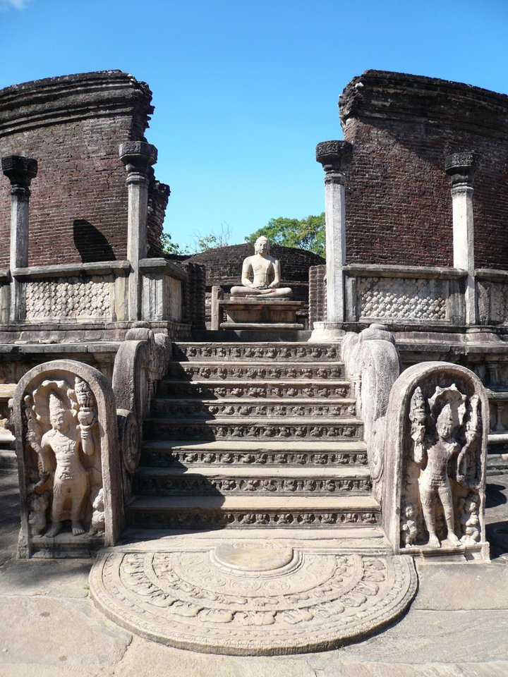
Ancient CitiesPolonnaruwa Dalada Maluwa & Vatadage
The supreme circular stone relic house in the Sacred Quadrangle, celebrated for exquisite moonstones, guardian stones, and concentric granite colonnades.
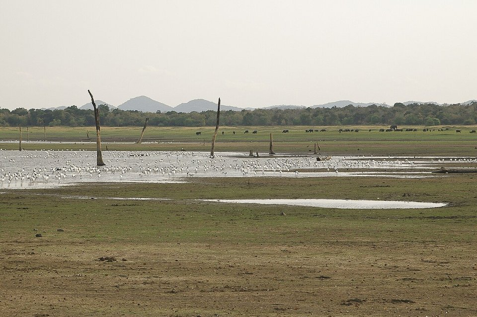
Wildlife & SafariMinneriya National Park (The Elephant Gathering)
Home of 'The Gathering', ranked by Lonely Planet as one of the world's top ten wildlife spectacles, where up to 300 wild Asian elephants assemble on the dry lakebed.
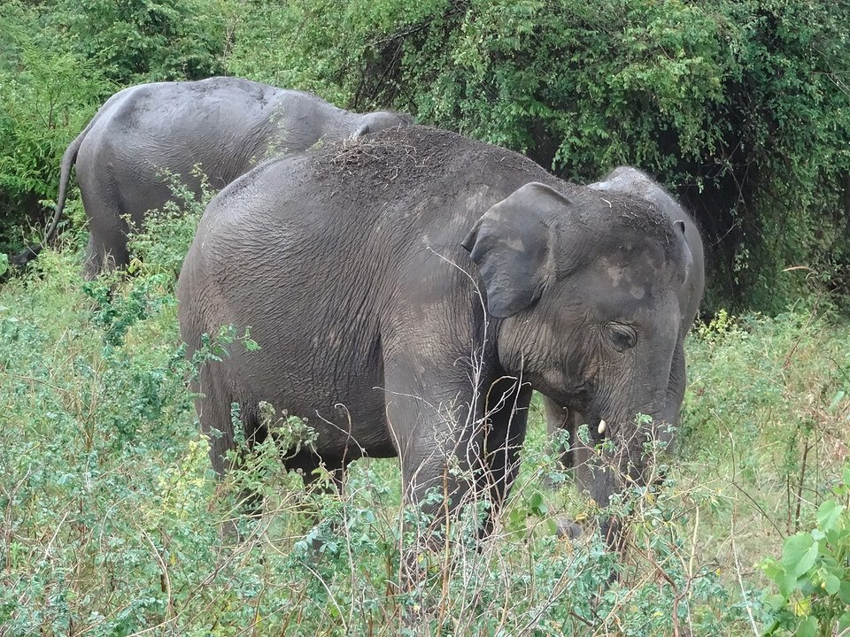
National ParksKaudulla National Park
A premier elephant corridor sanctuary centered around an ancient reservoir, where massive elephant herds gather when water levels alternate with Minneriya.